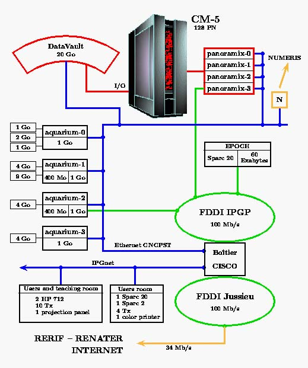

Pas de trêve de Noël sur Internet
Au Moyen-Age, il était d'usage parmi les preux chevaliers de remettre l'épée au fourreau au moment de Noël. Au coin de l'âtre, ils avaient tout loisir pour évoquer leurs combats, conter fleurette à leur dame ou vider force hanaps. À l'extrême fin du second millénaire, les soudards de l'Internet s'ennuient tellement au moment des fêtes qu'il ne leur reste que leur console pour donner un peu de piquant à leur morne existence.
Unité XXX, entre le 24 décembre et le 3 janvier : l'activité scientifique ayant fait relâche, un petit sournois est venu déposer quelques 700 Mo d'images répréhensibles sur le FTP-anonyme du laboratoire avant d'en diffuser l'adresse par les News. Pendant une semaine, les amateurs du genre ont eu tout le temps pour se servir avant que l'ingénieur système, intrigué à son retour de vacances par cet afflux inhabituel de connexions, ne mette un terme à ce recel involontaire de documentation délictueuse.
Moralité (elle en a pris un coup...) : lorsqu'on ne peut contrôler quotidiennement les "logs", il est prudent d'adopter une configuration fermant la porte aux intrus.
Unité YYY, dotée de gros moyens informatiques, entre le 23 décembre et le 2 janvier : un pirate, qui a usurpé une identité client d'un provider, s'introduit sur le serveur WEB. De là il lance des attaques nombreuses et variées vers les machines du laboratoire. L'heure des attaques est révélatrice de sa volonté de dissimuler ses manoeuvres frauduleuses : vendredi 27 décembre entre 19 h 30 et 22 h 00, lundi 30 décembre entre 00 h 00 et 01 h 00, jeudi 2 janvier entre 03 h 00 et 04 h 00... Suivies au jour le jour par le responsable sécurité de l'unité, ces attaques ont échoué. Comme le permet désormais la réglementation, le CNRS porte plainte.
Moralité : vigilance et professionnalisme sont les meilleurs garants du maintien en état de nos systèmes d'information.
La criminalité trouve sur Internet un immense et nouveau champ d'action. Lutter contre elle est un devoir pour chacun d'entre nous car il suffit parfois d'un seul mot de passe mal choisi pour ouvrir la porte à ceux qui ne cherchent qu'a nuire. C'est l'image de nos laboratoires qui est en jeu et, au-delà, la crédibilité de la Recherche.
Philippe Schreiber,
Fonctionnaire de Défense

Dans tous les laboratoires du CNRS, on relève depuis quelque temps une recrudescence des tentatives de pénétration, de détournement de ressources et des piratages informatiques divers. Les mesures que prennent les laboratoires pour se défendre contre ce type de délinquance se révèlent être souvent insuffisantes. Dans la lutte symbolique entre le "glaive" et le "bouclier", l'avantage est incontestablement aujourd'hui du côté du glaive. C'est pourquoi la plupart des pays développés durcissent leur législation.
Aux USA, un jeune étudiant de 20 ans, Nicolas Ryan, a été condamné à 250 000 $ et cinq années de prison pour avoir, entre juin et décembre 1995, illégalement utilisé les services en ligne du réseau AOL. Pour ce délit, il s'est servi du logiciel "AOL4Free" - disponible en libre service sur l'Internet - qu'il a très légèrement modifié. N. Ryan n'a pas été condamné pour avoir conçu ce logiciel de piratage, ni pour l'avoir diffusé, mais pour avoir accédé illégalement au réseau. Délit qu'il partageait avec près d'un million et demi de personnes ! On estime la valeur du temps de connexion piraté pendant ces six mois à moins de 60 $. Ce fait divers montre la détermination de la justice américaine à combattre la "délinquance informatique".
Chez nous, devant ce type de délinquance, certains restent encore un peu réticents : "Internet, c'est la liberté ; le piratage est le prix à payer pour cette liberté" disent-ils. Oui, mais cette délinquance est évolutive. Si on la laisse se développer, elle deviendra très rapidement incontrôlable et "l'espace de liberté" peut se transformer en l'espace de toutes les mafias. Nos systèmes d'information interconnectés en réseau sont, pour la qualité de notre recherche et son ouverture au monde, trop importants pour qu'on laisse dériver le système jusqu'à ce que la situation devienne incontrôlable. Se protéger - c'est vrai - demande des moyens supplémentaires et beaucoup de travail pour les responsables des systèmes. Mais c'est avant tout, pour tous, une certaine discipline personnelle et une organisation rigoureuse de l'administration du réseau :
Les directions des laboratoires doivent être déterminées à combattre toute tentative de pénétration illégale, en concertation avec le Fonctionnaire de défense et avec les conseils du service juridique du CNRS. Peut-être est-ce ainsi que nous découragerons les vocations malsaines et pourrons maintenir la délinquance informatique dans des limites "acceptables" ? C'est ce qu'il faut comprendre du verdict extrêmement sévère de la justice américaine dans cette affaire Nicolas Rya, verdict qui fut très médiatisé outre-Atlantique.

Dans ce nouveau numéro, nous continuons notre visite des grands établissements de recherche et d'enseignement par l'Institut de Physique du Globe de Paris (IPGP). Pierre François JEANNIN, ingénieur de recherche première classe, et Eduardo SEPULVEDA, ingénieur d'étude, veulent bien être nos guides dans cette visite et nous présenter les solutions qu'ils ont mises en uvre dans ce grand institut.
L'Institut de Physique du Globe de Paris, autonome depuis mars 1990, est un grand établissement sous tutelle du Ministère de l'Éducation Nationale, de l'Enseignement Supérieur et de la Recherche. Il travaille en liaison avec les grands organismes de recherche nationaux et internationaux : CNRS, INSU, CEE, ESA, NASA... Il a pour missions :
L'IPGP rassemble environ quatre cents personnes : cent vingt chercheurs permanents, une centaine de personnels ATOS-ITA, cent trente thésards et étudiants de DEA et DESS, et de nombreux visiteurs étrangers.
L'IPGP est organisé en Départements scientifiques, pour l'essentiel constitués d'équipes associées au CNRS : Sismologie, Magnétisme, Tectonique, Géochimie et Géomatériaux. Les autres départements ont une vocation horizontale entre ces cinq départements : Enseignement, Spatial, Modélisation Numérique et Observatoires. À ces unités, il faut ajouter les "Services Généraux" qui regroupent les services administratifs (budget, personnel, scolarité, service intérieur), la bibliothèque, les relations internationales, les ateliers et le service informatique.
Les équipes de l'IPGP sont disséminées sur plusieurs sites :
L'IPGP est sans aucun doute le premier institut de ce genre en Europe et l'un des trois meilleurs centres de Sciences de la Terre au monde.
Une présentation de l'IPGP (départements, thèmes de recherche, annuaire de l'établissement, programme des conférences, actualité, base de données, etc.) est proposée sur le serveur d'informations http://www.ipgp.jussieu.fr.
Les trois-quarts des informaticiens de l'IPGP sont répartis dans la plupart des équipes de recherche, en prise directe avec les programmes scientifiques, pour tout ce qui concerne l'acquisition, le contrôle et le traitement des observations, la diffusion et l'archivage des données, le développement d'algorithmes numériques, etc. Ils ont généralement en charge l'administration et la maintenance des stations de travail de leur équipe.
Le Service Informatique a en charge les moyens informatiques d'intérêt général affectés à l'enseignement et la recherche, et les infrastructures de réseau de l'établissement.
Les quatre ingénieurs du "SI" ont pour tâche la gestion des moyens communs : les réseaux locaux et leur interconnexion, les salles utilisateurs, les matériels et logiciels d'utilité générale, l'assistance aux utilisateurs, la coordination avec les informaticiens des équipes, l'administration des stations de travail des équipes dépourvues d'informaticien, et la supervision des consignes de sécurité.
Hormis les observatoires implantés dans les DOM et à l'étranger, pour lesquels les réseaux locaux sont en phase de réalisation, tous les autres sites de l'IPGP sont interconnectés au réseau parisien par liaison Numéris ou hertzienne.
Le réseau de l'Institut sur le Campus Jussieu bénéficie des infrastructures communes composées d'une dorsale Ethernet et d'un anneau FDDI, d'un serveur d'accès via le réseau téléphonique commuté et d'un accès à 34 Mbits/s à RERIF et RENATER.
Le réseau local, constitué d'un anneau FDDI et de segments Ethernet et Appletalk, est relié au réseau FDDI du Campus. Le parc informatique comprend plus de 320 nuds, en majorité des stations et des serveurs sous Unix (DEC, HP, IBM, SGI, SUN, TMC), mais aussi des micros (Mac et PC) et des terminaux X.
Quelques constats en guise d'introduction :
Il a été mené cependant un certain nombre d'actions dans le cadre d'une politique globale de sécurité au niveau de l'établissement :
Toutes ces actions concernent essentiellement les machines gérées directement par le Service Informatique, et ne suffisent pas pour sécuriser le réseau de l'établissement. Des mesures complémentaires ont été mises en uvre :


Gardes-barrièreLe terme garde-barrière recouvre plusieurs outils logiciels et matériels :
Le rôle d'un garde-barrière est d'assurer une protection du réseau interne, et de permettre de travailler sans trop de contraintes en limitant le nombre de machines à surveiller et à administrer parfaitement. Le garde-barrière est le point de passage obligatoire qui permet de vérifier la bonne application des règles de sécurité, et de contrôler le trafic entre l'intérieur et l'extérieur du réseau local. Il existe des produits commerciaux chez les principaux fournisseurs de matériel informatique, et des produits "domaine public", en particulier ceux qui ont été sélectionnés, testés et documentés par le CRU. cf : http://www.univ-rennes1.fr/CRU/KGB
|
Pierre-François JEANNIN
Tél. : 01 44 27 24 42
Adel : pfj@ipgp.jussieu.fr
Eduardo SEPULVEDA
Tél. : 01 44 27 24 48
Adel : edo@ipgp.jussieu.fr

Pour Jussieu, dans le menu "options -> préférences de réseau -> proxy" choisir "configuration manuelle du proxy". Cliquer configurer et mettre "wwwcache.jussieu.fr" port 3128 pour les proxies ftp et http.
Pour les autres sites, il faut installer un cache de campus qui pourra être fils du cache national ou d'un cache régional. Voir http://cache.cnrs.fr pour une information plus complète.

Sur les systèmes FreeBSD, il est possible, à partir d'un terminal distant, d'exécuter des commandes ayant les droits de super-utilisateur en utilisant une faille du deamon "talkd". Voir à ce sujet CERT advisory CA-96.04 "Corrupt Information from network Servers" sur ftp://info.cert.org/pub/cert_advisories/

Toute information est bonne à prendre pour un individu malveillant qui cherche à pénétrer un système. Les fichiers, comme le fichier history, le fichier bookmarks ou les fichiers du répertoire cache de vos navigateurs, recèlent de précieuses informations sur vous-même, vos habitudes et sur le réseau auquel vous appartenez. Si ces fichiers peuvent être accessibles par tout le monde, vous donnez ainsi les moyens de percer votre mot de passe, de manipuler votre système - surtout s'il supporte les extensions HTML 3.0 et Java - et finalement de servir de point d'appui ou de rebond à des attaques derrière un "garde-barrière" ou vers des systèmes plus critiques. Si vous avez accès à des webs "protégés" par des mots de passe, alors avec votre "cache" ouvert à tous les vents, n'importe quel pirate débutant accédera à ce web en se faisant passer pour vous. Il suffit simplement qu'il substitue votre cache au sien. Moralité : ne vous laissez pas compromettre dans ce genre d'affaire, protégez ces fichiers.

Je travaille sur une Sun SS20 sous Solaris 2.5 et j'essaie de copier le répertoire /etc avec la commande "cp -r /etc", mais cette copie ne se finit jamais, je dois interrompre la commande par Contrôle-C
Ce n'est pas vraiment une bonne idée de sauvegarder les fichiers système avec la commande "cp -r", parce que cela changera les droits sur les fichiers - propriétaire et permissions - et ouvre ainsi une brèche dans la sécurité. La copie s'effectue en suivant les liens symboliques, qui peuvent être récursifs, ce qui explique pourquoi il faut l'interrompre par Contrôle-C.
Mosaic 2.2 et toutes les versions précédentes de NCSA Mosaic pour X Window présentent une sérieuse faille de sécurité : ils permettent, à travers un URL telnet, d'exécuter n'importe quelle commande UNIX. Ce bogue a été corrigé dans la version 2.3.
http://home.fr.netscape.com/fr/eng/mozilla/2.02/handbook/index.html
Certains serveurs ftp anonymes ne permettent pas à Netscape de se connecter. En effet, ils laissent l'adresse @Mozilla à la place de votre adresse personnelle comme le demande l'usage. Pour y remédier, il suffit d'entrer l'URL recherchée sous la forme :
ftp://anonymous@ftp.xxx.fr/;
Une fenêtre demande alors de rentrer votre adresse électronique comme c'est l'usage pour les sites FTP anonymes.
Les virus ne contaminent pas directement une machine par le courrier électronique, disions-nous dans le numéro 12 de Sécurité informatique. Nous rappelons qu'ils peuvent néanmoins le faire indirectement par le biais des "pièces jointes" sous Word - qui peuvent contenir des "macro virus" - ou des fichiers "uuencode". Il convient donc de les vérifier avec un anti-virus avant de les ouvrir (fichiers Word) ou de les exécuter (fichiers exécutables décodés) comme on le ferait pour de tels fichiers s'il étaient "importés manuellement".